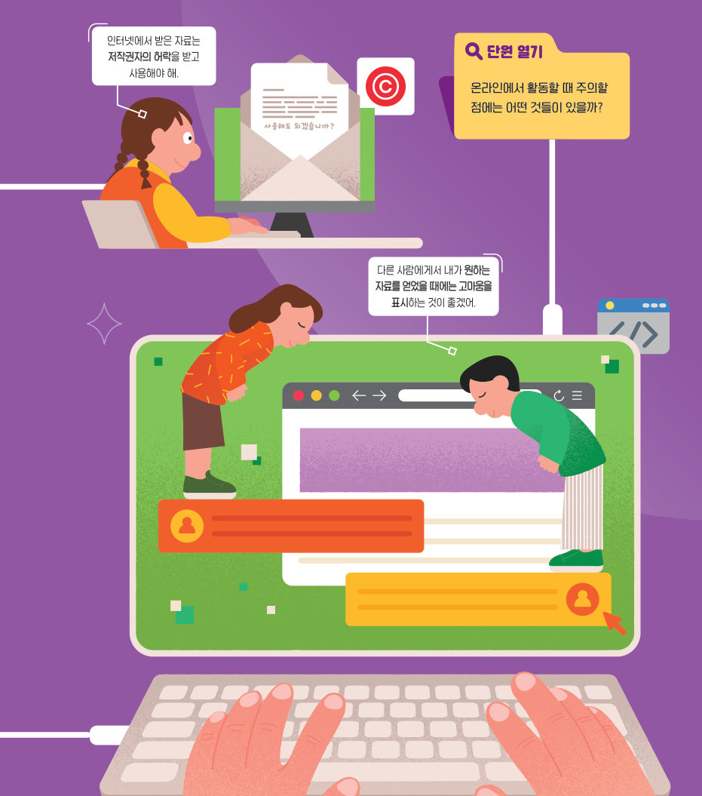
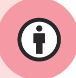
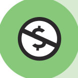
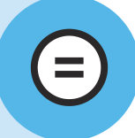

디지털 사회의 특성과 직업 변화, 사이버 폭력·디지털 중독·개인 정보·저작권까지 Ⅴ단원을 핵심 콕콕으로 정리하고, 프롬프트 엔지니어처럼 질문을 다듬어 결과를 바꿔 본 뒤, 단원 평가로 마무리하자.
생성형 인공지능은 사용자가 입력한 질문에 따라 새로운 그림을 그리고, 소설이나 시를 쓰기도 한다. 이때 어떠한 질문을 하느냐에 따라서 완전히 다른 결과를 생성해 낸다. 예를 들어 “꽃 피는 봄을 주제로 소설 한 편을 써 줘.”라고 요청한 뒤 생성형 인공지능이 답하면 “분량을 절반으로 줄여 줘.” 또는 “더 밝고 경쾌한 분위기로 바꿔 줘.”라고 내가 원하는 방향으로 답을 이끌어 낼 수 있다. “등장인물이 열 명 이상이면 좋겠어.”와 같이 정교한 명령어를 통해 원하는 결과를 얻을 수도 있다. 이처럼 생성형 인공지능에게 답변을 요청하는 질문을 프롬프트라고 한다.
프롬프트 엔지니어는 대화를 통해 생성형 인공지능을 훈련시키는 직업이다. 인공지능이 더 정확한 답변을 생성할 수 있도록 다양한 명령어(프롬프트)를 만들어 질문하는 일을 한다. 즉, 꼬리에 꼬리를 물고 질문을 던지면서 성능을 높인다.
| 01 디지털 기술이 개인의 생활과 사회 전반에 많은 영향을 미치며 상호 작용하는 사회를 디지털 사회라고 한다. | |
| 02 디지털 사회에서는 단순한 지식과 기술보다는 창의성과 아이디어가 중요하고, 정보의 공유와 소통을 통해 협력하여 업무를 처리하는 것이 중요하다. | |
| 03 청소년기에는 디지털 중독에 빠져도 학교생활과 대인 관계에는 큰 영향을 미치지 않는다. | |
| 04 인적 정보 외에 인터넷 검색 기록이나 취미 등의 행위 정보, 키, 몸무게 등의 신체 정보와 학교 생활 기록부 등의 교육 정보는 개인 정보에 포함되지 않는다. | |
| 05 저작권이란 저작물을 만든 사람의 노력과 가치를 인정하고 권리를 보호하기 위해 저작자가 자신의 저작물에 관하여 가지는 권리이다. |

㉠
㉡
㉢| (1) 정보의 전달 범위가 넓다. | |
| (2) 본인의 신분이 드러나지 않는다. | |
| (3) 정보가 전달되는 속도가 매우 빠르다. | |
| (4) 상대방을 직접 만나지 않고 온라인으로 만난다. |
| 평가 기준 | 스스로 평가 |
|---|---|
| 디지털 사회의 특성과 사회 변화에 따른 직업의 변화를 탐구할 수 있는가? | |
| 디지털 사회의 구성원으로서 편리하고 안전한 생활을 위한 규칙에 관해 민주적으로 논의하고 실천 방안을 수립할 수 있는가? | |
| 사례를 중심으로 디지털 공간에서 함께 살아가기 위해 개인 정보 및 권리와 저작권을 보호하는 실천 방안을 탐구할 수 있는가? |